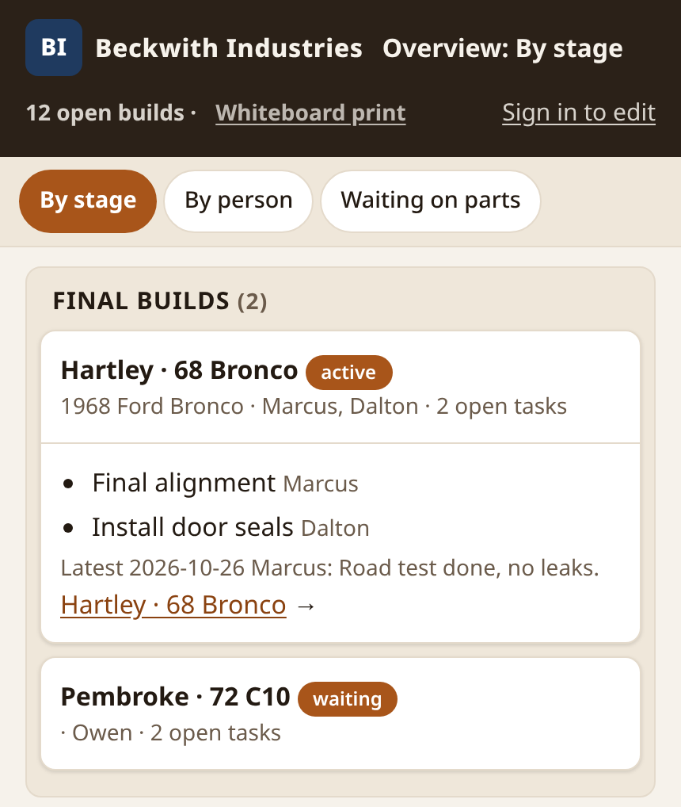

I build AI agents that keep working when models fail.
At work I designed, led, and built platform, reliability, and AI systems: Kubernetes at 24,000+ pods, CI/CD that runs 6x faster, and an AI workflow that turns tickets into pull requests. On my own time I designed and built the side and personal projects below. I build all types of agents, including always-on agents that start on their own from webhooks, cron schedules, and messages.
3xAI TOOLINGproductivitywith AI tooling, without lowering quality
[Full-time work]
Platform, reliability, and AI work for employers, newest first. I designed, led, and built each one. Employer names, code, and screenshots stay private.
./work-factory · 2025–present
AI work factory: from ticket to pull request
A ticket goes in and a tested, self-reviewed pull request comes out, with better reliability, velocity, and output quality.
>run ticket-to-pr
01Linear ticket
02spec
03implementation
04tests
05critic review
06gap fixes
07pull request
What I did
LLM agents and deterministic code work together, each doing the steps it handles best.
Every job starts as a spec generated from the ticket, and the agents implement that whole spec.
The workflow tests its own implementation, reviews it with critic agents, fixes the gaps it finds, then opens the pull request.
Covers software delivery, on-call management, and tooling, not only code.
LLM agents
Critic agents
Agent orchestration
Hybrid LLM + deterministic workflows
Linear
Pull requests
./ai-infra · 2024–present
AI agents for infrastructure work
Tripled my productivity with AI tooling, without lowering quality.
I doubled my meaningful code and review contributions in the first quarter, tripled them over the last year, and significantly reduced MTTR.
What I did
Created custom prompts, agent orchestration flows, specialist and critic agents, and self-improving workflows to resolve hard infrastructure issues and ship major projects faster.
Developed a secure container sandbox that gives AI agents read-only access to cloud infrastructure and Kubernetes clusters and lets them open pull requests safely, so agents work in parallel with no risk of accidental changes.
Mentored the team on AI practices with Copilot and Claude, and shared my tooling and lessons alongside Terraform and policy engines.
Claude
Copilot
Gemini
Agent orchestration
Container sandbox
./k8s-reliability · 2024–present
Kubernetes platform reliability at 24,000+ pods
Clusters running 24,000+ pods get new nodes 50%+ faster, cost less, and take days less effort to upgrade.
What I did
Reconfigured and upgraded Karpenter, cutting node provisioning time 50%+.
Wrote Kyverno policies that enforce resource requests, caps, and best practices, reducing EKS cluster costs and node overcommitment.
Built an auto-rollback service for problematic AMI releases on EKS. It prevents major outages on its own and notifies SREs for follow-up.
Simplified administration and expanded policy as code, saving days of engineering effort per Kubernetes upgrade.
Created Grafana dashboards, Prometheus and Thanos metrics, recording rules, and alerts.
AWS EKS
Karpenter
Kyverno
Grafana
Prometheus / Thanos
./iac-platform · 2024–present
Self-service infrastructure-as-code platform
Engineers deploy infrastructure on their own, with no risk to production data.
What I did
Delivered and fully manage a self-service IaC platform built on gated GitHub Workflows.
Kyverno and OPA policies check every change before it applies.
Plans, applies, and retries run automatically, with manual triggers when an engineer needs one.
Terraform
GitHub Actions
Kyverno
OPA
./ci-platform · 2021–2024
6x faster CI/CD and an internal developer platform
CI/CD in a large monorepo ran 6x faster, upgrade toil dropped 80%, and every engineer adopted the internal developer platform.
What I did
Designed dynamic GitLab pipelines that trigger only the affected jobs.
Built automation that pauses and resumes GitLab Runners during Kubernetes upgrades, ending deployment conflicts.
Stabilized Terraform, stood up Vault on ECS, migrated secrets, and containerized VMs.
Wrote RFCs for architecture changes and mentored SREs.
GitLab CI
Terraform
Vault
AWS ECS
Kubernetes
./k8s-migration · 2019–2021
Internal developer platform and zero-downtime Kubernetes migration
Kubernetes services moved across AWS accounts with zero downtime.
What I did
Designed and built an internal developer platform.
Migrated multi-account Kubernetes services, coordinating AWS networking and DNS for a zero-downtime cutover.
Developed IaC tooling that automates brittle repairs, such as certificate uploads, DNS mirroring, and Artifactory migrations, preventing outages from expired certificates.
Kubernetes
AWS
DNS
Artifactory
[Side projects]
Built on my own time. I designed and built each one.
./garage-assistant · 2026 · Slack, web board, Cloudflare
AI garage operations assistant and build tracker
Replaces a spreadsheet, a whiteboard, a retyped daily status doc, and a group text for vehicle builds and repairs.
Mechanics keep posting texts, photos, receipts, PDFs, and voice notes from their phones as they always have, and every build's record stays complete. Designed to run on Cloudflare's $5-a-month Workers plan.

Build board: every open build by stage, with who is on it and what's next. Sample data.
How it works
Crew posts in Slack
Signed webhook
Cloudflare Worker
Queue
AI readers on Workers AI
D1 database and R2 files
Phone-first web board
Why it matters
The assistant files each post to the right build. When the build is unclear or a post looks like a duplicate, it asks instead of guessing.
Several vision models read each receipt in parallel, each field is decided by majority vote, and the arithmetic is checked. Mismatched totals, duplicate invoices, and unusual prices go to a person.
Every write is logged and undoable, and nothing is hard-deleted. Corrections work in plain words, such as "move the water pump to the other truck", and invoiced records never move.
The garage leader gets a daily labor report, a phone-first board by build stage, and build pages with tasks, parts, receipts, and photos.
A watchdog resends any post that stalls, then alerts a person. Failed deploys roll back on their own, and nightly backups get a monthly restore drill.
pi-toolbag: CTX long-horizon focus and LLM failover for coding agents
Coding agents stay on task for the long haul and keep working when a model provider fails.
Extensions for the Pi coding agent: CTX rebuilds working context after each compaction, and a shared failover library replays failed requests on the next model.
Why it matters
CTX keeps a coding agent focused across context compactions without stopping useful exploration. It rebuilds context from typed records within a fixed token budget, with no extra model call.
Project rules are shared across sessions only after a person confirms them, so an agent's passing notes never become rules on their own.
Same-session failover switches on quota, timeout, safety errors, and stalled streams, and never on auth errors or refusals. No user action is needed.
Usage-cap gates switch away before a model hits its limit and switch back once usage recovers.
TypeScript
Pi coding agent
Vitest
./harness · 2026 · in daily use
Coding-agent harness
Every coding-agent session starts with the same scoping, checks, and project rules.
Skills, lifecycle hooks, and AGENTS.md templates for xAI's Grok Build coding agent, set up by one installer.
Why it matters
Each task is scoped before work starts and checked before it's called done.
Lifecycle hooks protect context before compaction and nudge the agent to verify its work.
AGENTS.md templates give each project the same written rules, and the installer is safe to run again.
Grok Build
Agent skills
Lifecycle hooks
AGENTS.md
[Personal projects]
Agents I designed and built for my own household.
./personal-ops · 2026 · 20+ agents
Multi-agent personal operations system
A team of AI agents runs a household's daily operations, and a person approves anything that goes out.
More than 20 specialized agents, plus a morning briefing on email, calendar, tasks, orders, weather, and job matches.
How it works
Router agent
Specialist agents
Shared report files
Morning briefing
Why it matters
Routing rules send each request to one specialist: chief of staff, research, tasks, email, notes, browser, or job search. Scheduled routines run without a prompt.
Human approval is required before any email, message, or post is sent.
A queued, lock-protected browser agent (Python, Chrome DevTools Protocol) handles sites with no API.
Job-board, weather, and nutrition pipelines retry and check themselves.
Python
Chrome DevTools Protocol
browser-use
Scheduled routines
./job-search · 2026 · scheduled agent
AI job-search pipeline
Matching roles come straight from employers' own careers sites, each checked for scams and ghost jobs.
Mail replies keep each role's status current. On a test run of one metro area's employers, it kept 48 roles and dropped 326, each with its reason.
The pipeline page, grouped by status.A role card. The company and role are made-up examples.The scam check passes the real posting on the company's own careers board and flags a lookalike email that claims to be the same company and asks you to run its code.
How it works
Careers-site job feeds
Title and rule filters
Scam and ghost checks
Status-grouped web page
SEC filings and WARN notices
Company cards
Weekday mail checks
Role status
Why it matters
Reads each employer's careers site broadly, then filters by fixed titles and rules. Covers Greenhouse, Lever, Ashby, Workday, Oracle, Phenom, Avature, and SmartRecruiters feeds, and splits searches that pass Workday's 2,000-result cap.
Sends only sites that block scripts to a browser agent, with spaced, backed-off requests.
A read-only mail agent checks full threads twice each weekday, so replies update each role's status.
Labels every role, and every email that claims to offer one, for scam risk and ghost-job risk with fixed rules, not a model's opinion. Hard flags, such as a fee up front, a sender domain that doesn't match the company, or a request to run code, mark a likely scam. No label removes a role, and every dropped role shows its reason.
Python
Careers-site job feeds
Read-only mail agent
Browser agent
SEC and WARN filings
Rule-based scam checks
./puppy-search · 2026 · research agent
AI-assisted puppy search
A daily search across shelters, rescues, and breeders, with an alert when the right dog appears.
Paired with a temperament guide built from 39 trainer and veterinary-behaviorist sources.
A lead card. The shelter, price, and contact are made-up examples. Listing photo: John Schanlaub, CC BY 3.0, via Wikimedia Commons.An excerpt from the sourced temperament-test guide.
How it works
Scheduled research agent
Shelter, rescue, and breeder sites
Ranked photo cards and alerts
Why it matters
Runs every evening and on demand against one written dog profile.
Ranks rescue and shelter dogs ahead of breeders and private listings, and alerts when a match becomes available.
./daily-log · 2026 · personal agents
Daily food and activity logging agents
A few chat messages and a meal photo become a complete daily note, with no forms to fill in.
A daily note as the logging agents write it from a few chat messages and a meal photo. Example data only, not real metrics.
How it works
Chat messages and meal photos
Logging agents
One dated daily note
Trends across days
Why it matters
Reads food and activity details from plain messages and meal photos, and files them under the right day.
Estimates calories for each meal and labels them as estimates.
Writes one note per day from a fixed template, so days compare cleanly over time.
My extensions for the Pi coding agent: CTX focus and LLM failover.
pi-hashline-edit-pro
Input-validation fix.
durable-pi fork
Grok model integration.
[Models I use and how]
Each model has a specific job, and some jobs have a fallback.
Coding: xAI's Grok Build coding agent, run through my own sandboxed launcher, and the Pi coding agent with pi-toolbag. Pi's failover chain, in order: GLM-5.3 on Baseten, Grok through SuperGrok, Grok through the xAI API, Anthropic's Fable, Claude Opus, then Claude Sonnet.
Planning and review (personal work): Grok.
Browser agent and data-ingest decisions (personal work): typesafe.ai's Jev.
Garage assistant receipt reading (Cloudflare Workers AI): Llama 4 Scout 17B, Mistral Small 3.1 24B, and Llama 3.2 11B Vision read each receipt in parallel, and each field is decided by majority vote.
Telling photos from documents (garage assistant): Llama 3.2 11B Vision plus ResNet-50 decide whether an upload is a document to read in full or a photo to describe.
Voice notes: Whisper large-v3-turbo transcribes, with Deepgram Nova-3 as the fallback.
At work: Astra/Terra, plus Fable, Opus, and Sonnet. I'm evaluating OpenAI's Decisions model for alerts, Kubernetes events, and log lines.